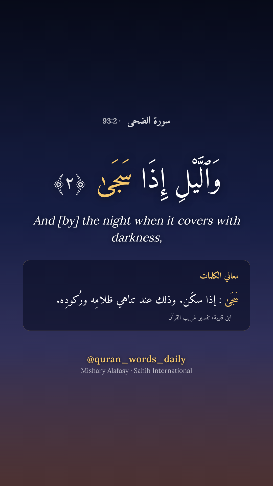

القرآن والسنة في حياتك اليومية
Quran & Sunnah for everyday life
Recitations. Twice a day, a short video shows a complete passage, never cut mid-sentence: its recitation by a renowned reciter, named in the video, the Uthmani Arabic text, the Sahih International English translation, and the meaning of its difficult words from Tafsir al-Muyassar (King Fahd Complex).
In the morning, Juz' 'Amma, then the whole Quran in order. In the evening, a theme, such as Ayat al-Kursi, du'a, provision, patience or repentance. On Fridays, Surah Al-Kahf. And every day on Instagram and Facebook, a word of the Quran with its meaning.
Themes and stories. Animated episodes on a theme of everyday life (du'a, patience, repentance, trust in Allah, khushu…) or a story from the Quran (Moses and al-Khidr, Dhul-Qarnayn…), narrated in Egyptian Arabic with English subtitles. Each verse is recited by a real reciter; hadith come from Sahih al-Bukhari, Sahih Muslim and Jami' at-Tirmidhi (graded by al-Albani), read by a real reader when a recording exists. The narrator's voice is AI-generated; every description says so.
No verse, translation, word meaning or hadith is ever written by AI: each comes from a published, referenced source and is credited in every video.

Follow
Instagram and YouTube: @quran_words_daily
TikTok: @quran_words_daily6
Facebook: facebook.com/quranwordsdaily
How it works
The videos are produced by open-source programs and published to the project's own accounts on Facebook, Instagram, TikTok and YouTube. They do not post on behalf of anyone else and do not collect data from viewers. Source code: github.com/mssnoussi92/quran-reels (recitations) and github.com/mssnoussi92/quran-themes-demo (themes and stories).